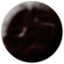
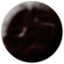
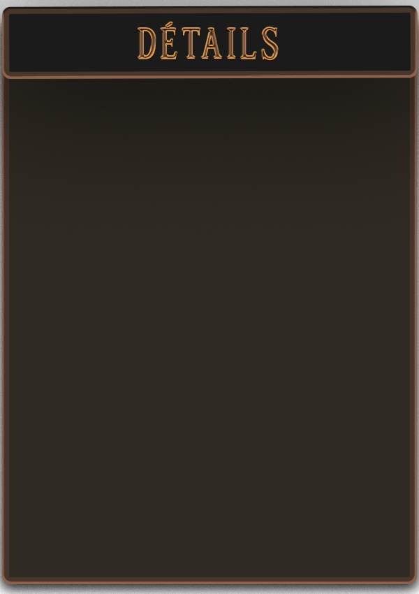

Syngnathe
1 - La pipe des mers : Le syngnathe, avec son corps long et fin, ressemble à une petite pipe de tabac.
2 - Papa poule : Le mâle porte les œufs dans une poche sous sa queue jusqu'à l'éclosion.
3 - Camouflage de pro : Ses couleurs marron-vertes et son corps élancé lui permettent de se fondre dans les herbiers marins.